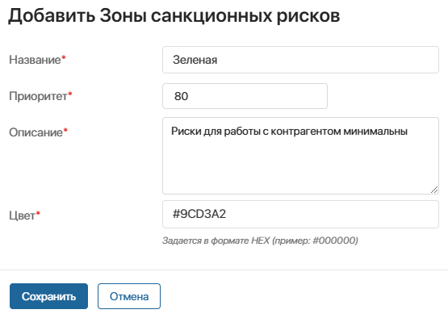
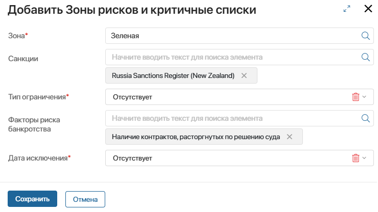

Бизнес-решение Интеграция СПАРК позволяет настраивать и отображать в элементах приложений результаты проверки компаний и физических лиц на санкционные риски.
Если открыть карточку элемента, выполнится запрос в сервис СПАРК по контрагенту. Затем полученные данные сопоставляются с правилами, настроенными в справочниках раздела СПАРК. Определяется зона риска, к которой относится контрагент. Она отобразится в карточке элемента.
Для этого в решении предусмотрены:
- справочники раздела СПАРК, размещённые под разделителем Конструктор зон санкционных списков:
- Санкционные списки;
- Факторы риска ФЛ и ЮЛ;
- Зоны санкционных рисков;
- Зоны рисков и критичные списки;
- виджет Зона санкционного риска.
Настроить работу с санкционными рисками
Этапы выполнения настроек:
- Справочники Санкционные списки, Факторы риска ФЛ и ЮЛ заполняются автоматически данными из сервиса СПАРК после настройки модуля интеграции.
- Далее нужно вручную настроить зоны рисков и задать правила для них. Эти действия требуют специальных знаний по работе с санкционными рисками. Выполнить их могут юристы или специалисты службы безопасности, заполнив следующие справочники:
- Зоны санкционных рисков — здесь создаётся список категорий рисков, которые будут применяться к контрагентам в вашей компании;
- Зоны рисков и критичные списки — здесь настраиваются правила для всех созданных зон риска. Данные из сервиса СПАРК по контрагенту сопоставляются с этими правилами, и на основе этого определяется зона риска, к которой будет отнесён контрагент.
- Администратор системы размещает виджет Зона санкционного риска на формах приложений, где нужно показать зону риска, к которой относится контрагент. Например, можно добавить виджет на форму просмотра приложения Компании в разделе CRM.
Создать зоны санкционных рисков
В справочнике Зоны санкционных рисков добавьте категории рисков, которые будут применяться к контрагентам по результатам их проверки в сервисе СПАРК.
Далее для каждой зоны нужно настроить правила, то есть выбрать актуальные для вашей компании санкционные списки из сервиса СПАРК, в которых может числиться контрагент. Подробнее об этом читайте в разделе «Настроить правила определения зоны риска».
Если по результатам проверки контрагент не числится ни в одном из заданных списков, он не будет отнесён ни к одной из созданных зон. В этом случае в виджете Зона санкционного риска отобразится наименование Зеленая. По умолчанию для такой зоны не заданы правила. Вы можете дополнительно настроить их, добавив зону с таким же названием для контрагентов с минимальными рисками. Например, можно создать зоны:
- Зелёная — риски для сотрудничества с контрагентом минимальны;
- Жёлтая — работа с контрагентом допустима, но в определённых рамках, т. к. есть риски;
- Красная — не рекомендуется сотрудничать с контрагентом.
Для этого:
- В правом верхнем углу страницы справочника нажмите + Зоны.
- Заполните форму создания зоны риска:

- Название* — введите наименование, которое отобразится в виджете Зона санкционного риска;
- Приоритет* — задайте числовое значение приоритета для текущей зоны риска. Приоритет учитывается, если по результатам проверки контрагент будет отнесён к нескольким зонам риска. Тогда в виджете Зона санкционного риска отобразится зона с наименьшим значением приоритета. Например, из двух зон с приоритетами 10 и 80 будет выбрана зона с приоритетом 10;
- Описание* — добавьте пояснение для нового элемента;
- Цвет* — задайте цветовое обозначение новой зоны риска в виджете Зона санкционного риска. Для этого используйте формат классификации НЕХ.
Настроить правила определения зоны риска
После создания зон риска для каждой из них задайте правила, по которым контрагент будет отнесён к этой зоне. Правила создаются в справочнике Зоны рисков и критичные списки.
В настройках правила выберите списки сервиса СПАРК из справочников Санкционные списки, Факторы риска ФЛ и ЮЛ. Для каждого контрагента в этих списках указан тип ограничения и дата исключения из списка. В правиле определите, какими должны быть значения этих параметров во всех выбранных списках, чтобы отнести контрагента к текущей зоне риска.
В нашем примере для каждой зоны риска Зеленая, Желтая и Красная нужно добавить правила. Рассмотрим настройку на примере зоны Зелёная. Создадим условное правило, в котором выберем два списка из СПАРК и значение Отсутствует — для типа ограничения и даты исключения. Если на момент запроса в СПАРК контрагент числится в списках зелёной зоны с типом ограничения и датой исключения Отсутствует, он будет отнесён к этой зоне.
Обратите внимание, правила для зон риска создаются совместно со специалистами по санкционным спискам.
Чтобы настроить правило:
- В правом верхнем углу страницы справочника Зоны рисков и критичные списки нажмите + Зоны.
- В открывшейся форме заполните поля:

- Зона* — укажите элемент справочника Зоны санкционных рисков, для которого вы настраиваете правило;
- Санкции — выберите элементы из справочника Санкционные списки, по которым будет выполняться проверка контрагента в рамках текущей зоны риска;
- Тип ограничения* — укажите одно из значений, с которыми контрагенты числятся в списках сервиса СПАРК: Блокирующие, Неблокирующие, Отсутствует. Учитываются списки, выбранные в полях Санкции и Факторы риска банкротства;
- Факторы риска банкротства — выберите элементы справочника Факторы риска ФЛ и ЮЛ, по которым будет выполняться проверка контрагента в рамках текущей зоны риска;
- Дата исключения* — укажите вариант сопоставления даты запроса в СПАРК и даты исключения из списков, с которой контрагент числится в выбранных списках СПАРК. Для выбора доступны следующие варианты, когда контрагент числится в списках:
- Позже — с датой исключения позже той, когда отправлен запрос в СПАРК;
- Равно — с датой исключения, совпадающей с датой запроса в СПАРК;
- Отсутствует — с пометкой Отсутствует для даты исключения.